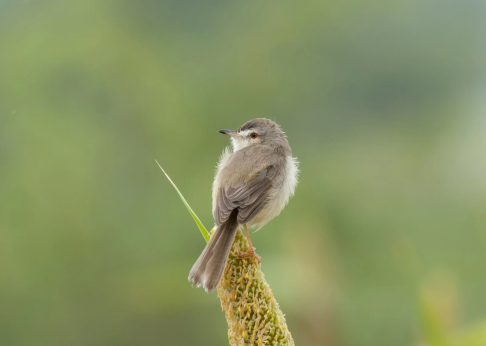

Back to the indexNO. 006 · Songbirds & City Birds / Cisticolidae · Cisticolas & Prinias
Plain Prinia
纯色山鹪莺 · chún sè shān jiāo yīng Prinia inornataThe electric drill in the grass
A small grey-brown bird with a long tail trailing behind it, forever threading through the middle of a grass clump. Its call is a miniature drill — flat, dense and able to go on for a very long time. It is the commonest background sound of waste ground in the Pearl River Delta.
Gallery
One scientific illustration for shape and colour blocks, two field photographs for how it looks in real light. Click any image to enlarge.
Identification
- PlumageUpperparts grey-brown with a faint supercilium; underparts pale yellowish white; overall plain, almost unmarked.
- TailLong, broad and graduated, darker at the tip, often cocked high or swung from side to side.
- BillFine and pointed; black in the breeding season, fleshy pink outside it — a useful clue to the time of year.
- ShapeSlight, with weak legs and feet, clambering between grass stems like a miniature long-tailed monkey.
Behaviour
Spends its whole life in grass and low vegetation and rarely flies into the open. Feeds on insects and spiders; in the breeding season it stitches grass blades into an oval nest slung between stems. Common in South China along paddy bunds, wetland margins and roadside waste — one of the few species that has increased as the city has spread.
Voice
A continuous 'tsip-tsip-tsip…' or 'zee-zee-zee', mechanical in rhythm and steady in pitch, running to dozens of notes like a drill or a cricket. Breeding males make short song flights from the tops of grass stems.
Where to find it in Zhuhai
- Doumen paddy bunds
- grassland around Hengqin wetlands
- Jinwan wasteland
- Qi'ao roadside tussocks